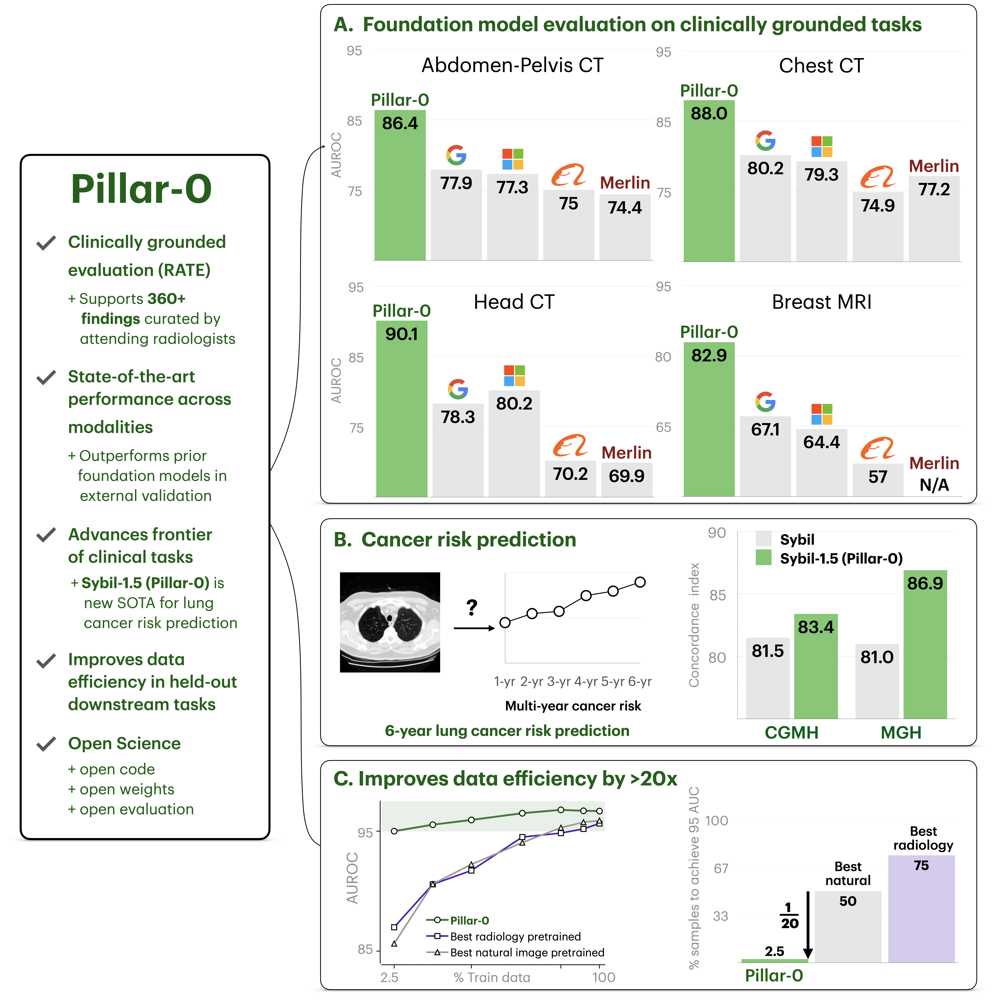
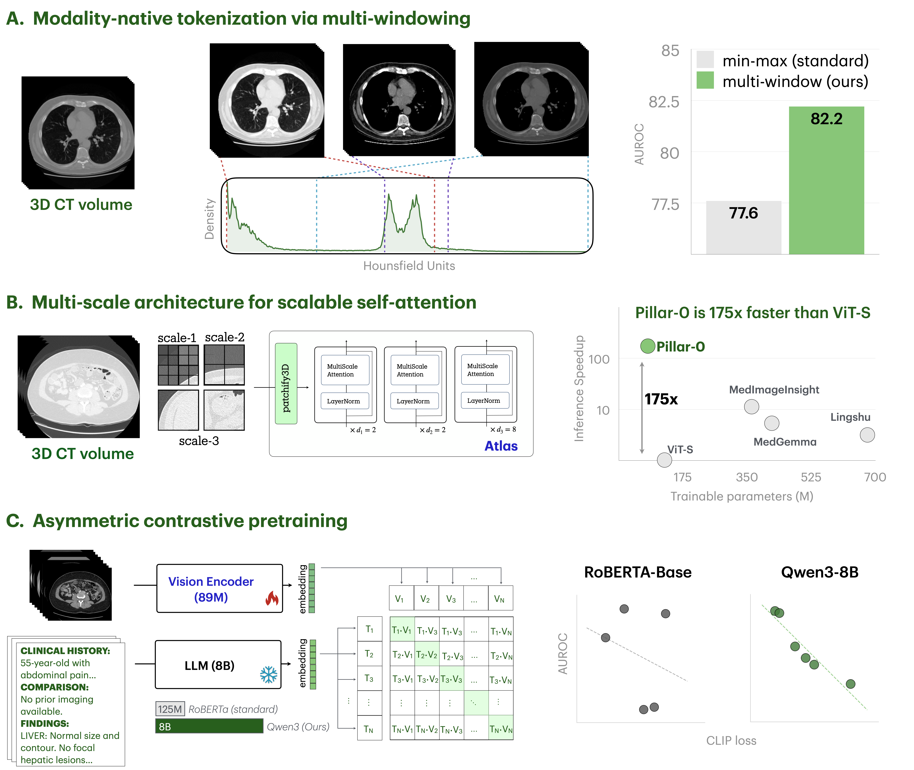
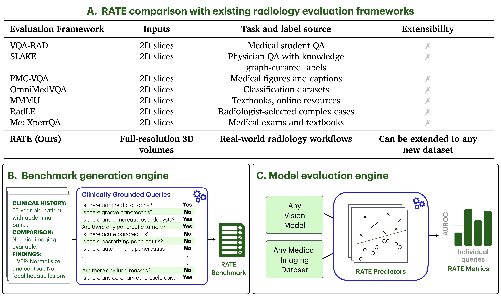
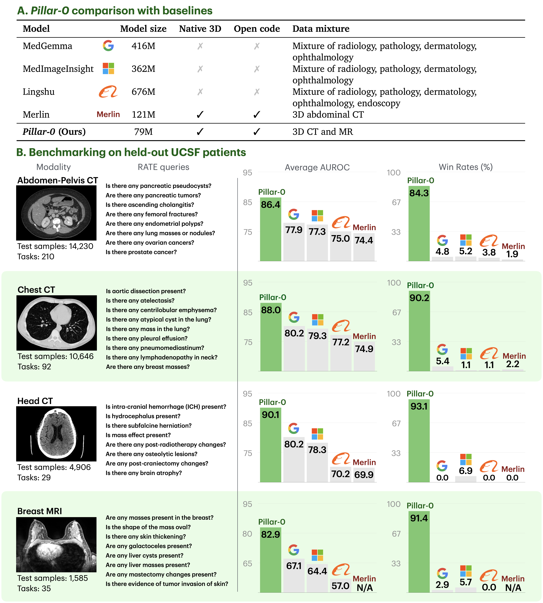
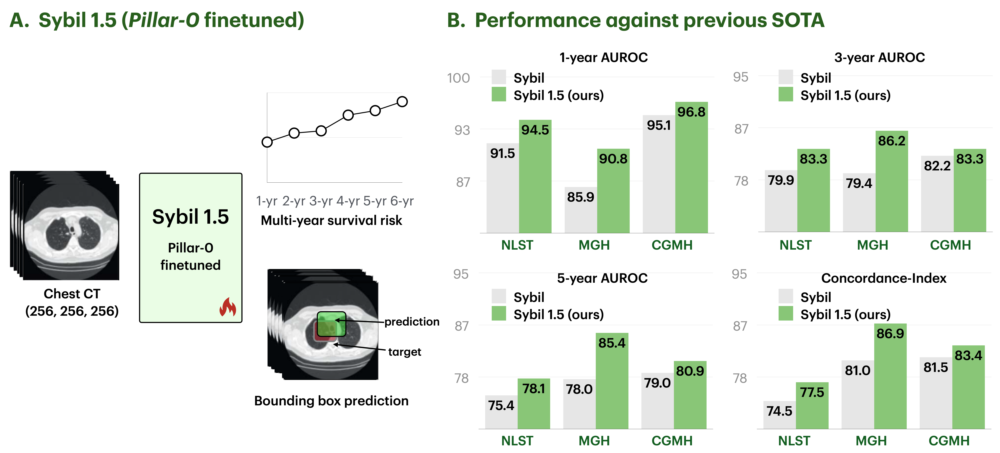
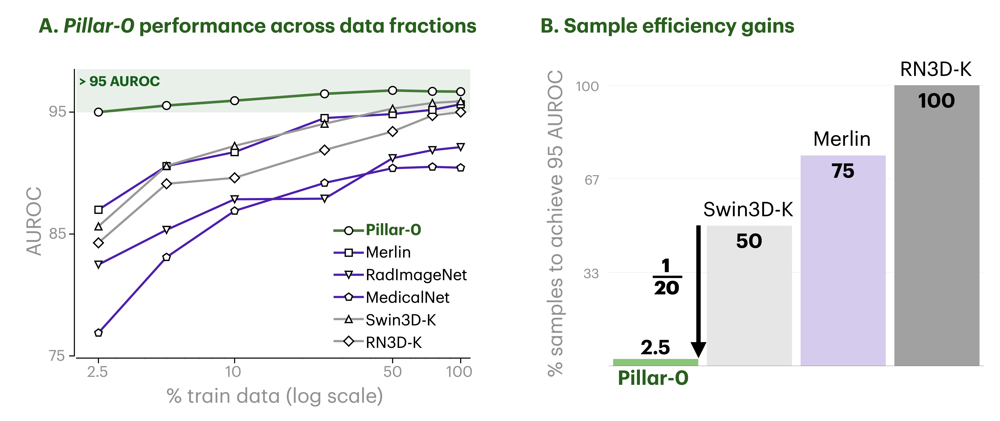

Pillar-0 Overview
Radiology plays an integral role in modern medicine, yet rising imaging volumes have far outpaced workforce growth, contributing to burnout and challenges in care delivery. Foundation models offer a path toward assisting with the full spectrum of radiology tasks, but existing medical models remain limited: they process volumetric CT and MRI as low-fidelity 2D slices, discard critical grayscale contrast information, and lack evaluation frameworks that reflect real clinical practice. We introduce Pillar-0, a radiology foundation model pretrained on 42,990 abdomen-pelvis CTs, 86,411 chest CTs, 14,348 head CTs, and 11,543 breast MRIs from a large academic center, together with RATE, a scalable framework that extracts structured labels for 366 radiologic findings with near-perfect accuracy using large language models.
Pillar-0 establishes a new performance frontier across multiple benchmarks and tasks:
- Internal RATE-Evals: Across internal test sets of 14,230 abdomen-pelvis CTs, 10,646 chest CTs, 4,906 head CTs, and 1,585 breast MRIs, Pillar-0 establishes a new performance frontier, achieving mean AUCs of 86.4, 88.0, 90.1, and 82.9, outperforming MedGemma (Google), MedImageInsight (Microsoft), Lingshu (Alibaba), and Merlin (Stanford) by 7.8-15.8 AUC points and ranking best in 87.2% (319/366) tasks.
- External validation: Pillar-0 similarly outperforms all baselines in an external validation on the Stanford abdomen-pelvis CT dataset, including Merlin (82.2 vs 80.6 AUC), which uses the Stanford dataset for development.
- Lung cancer risk prediction: Pillar-0 extends to tasks beyond its pretraining, such as long-horizon lung cancer risk prediction, where it improves upon the state-of-the-art Sybil by 3.0 C-index points on NLST, and generalizes with gains of 5.9 (MGH) and 1.9 (CGMH).
- Data efficiency: In brain hemorrhage detection, Pillar-0 obtained a >95 AUC when using only 1/20 of the data of the next most sample efficient baseline.
Pillar-0 and RATE together provide an open, clinically rigorous foundation for building high-performance radiology systems, enabling applications that were previously infeasible due to computational, data, and evaluation constraints.

Overview of Pillar-0 and key results across modalities and tasks.
Pillar-0 key innovations
(A) Modality-specific multi-windowing converts full- resolution CT and MRI volumes into multi-channel inputs that emulate radiologist workflow presets, preserving clinically relevant contrast. Training with multi-windowing leads to a 4.6 point gain in AUROC in abdomen-pelvis CT.
(B) The Atlas vision backbone employs hierarchical Multi-Scale Attention to efficiently process long-context volumes. As a result, Pillar-0 is 175x faster than ViT-S, and achieves state-of-the-art performance with fewer parameters than other medical foundation models.
(C) Asymmetric contrastive pretraining aligns Atlas volume embeddings with embeddings from a much larger frozen LLM text encoder. Using this powerful text encoder leads to a much stronger correlation between CLIP loss and downstream performance, providing a reliable signal for clinical utility to guide pretraining experiments.

Pillar-0 key innovations across tokenization, architecture, and pretraining.
Clinically Grounded Evaluation
We introduce RATE, a unified framework designed to evaluate any vision model on full-fidelity medical volumes, using authentic clinical tasks derived from real-world radiology practice. Board-certified radiologists curated 366 diverse radiologic findings reflecting real-world practice across our modalities. RATE then uses open large language models to extract binary labels for each task from radiology reports, enabling scalable and clinically grounded benchmarking. Building on this framework, we introduce RATE-Evals, a standardized protocol for assessing pretrained vision encoders on real-world medical imaging datasets using linear probing.

RATE: a clinically grounded evaluation framework for volumetric radiology.
Results
Internal RATE-Evals. Pillar-0 achieves the dominant overall performance across all evaluated modalities in UCSF held-out test sets. For each modality, Pillar-0 attains the highest average AUROC, with modality-level AUROC improvements of 7.8-15.8 points over the closest baseline. Aggregated over modalities, Pillar-0 wins on 319 of 336 findings (87.2%), winning at least 84.3% in every modality.
External. Pillar-0 demonstrates strong external generalization, outperforming all baselines evaluated on the Stanford Merlin Abdominal CT Dataset. Notably, Pillar-0 outperforms Merlin, which was developed using this dataset. Pillar-0 (Stanford Only), pretrained with the Pillar-0 recipe on the Stanford data alone, also outperforms Merlin. Pillar-0 (UCSF + Stanford), which is initialized from Pillar-0 and then finetuned on the Stanford dataset, pushes performance even further, establishing best average AUROC by a wide margin.
Lung cancer risk. Pillar-0 can significantly improve performance in tasks beyond the current standard of care. We introduce Sybil-1.5 (Pillar-0 finetuned), trained on chest CTs and annotations from NLST to predict multi-year cancer risk and bounding boxes of suspicious regions. Across all datasets and time horizons, Sybil-1.5 improves risk stratification over baseline.
Data efficiency. Pillar-0 achieves substantial gains in sample efficiency, outperforming competitive baselines using only a small fraction of the labeled data. Pillar-0 achieves >95 AUC in brain hemorrhage detection using only 5% of the data required by the next most sample-efficient baseline.

Pillar-0 achieves dominant performance over MedGemma, MedImageInsight, Lingshu, and Merlin on held-out UCSF test sets across all modalities.

Finetuning Pillar-0 (Sybil-1.5) sets a new state-of-the-art for future lung cancer risk prediction

Pillar-0 dramatically improves data efficiency for brain hemorrhage detection on RSNA-2019.
| Model | Dataset | Average AUROC (Merlin RATE-Eval) |
|---|---|---|
| MedGemma | Mixture of medical imaging | 72.6 |
| MedImageInsight | Mixture of medical imaging | 74.9 |
| Lingshu | Mixture of medical imaging | 72.1 |
| Merlin (Stanford) | Merlin-Abd-CT | 80.6 |
| Pillar-0 (Stanford Only) | Merlin-Abd-CT | 82.2 |
| Pillar-0 | UCSF-Abd-CT | 82.2 |
| Pillar-0 (UCSF + Stanford) | UCSF-Abd-CT + Merlin-Abd-CT | 84.9 |
Pillar-0 outperforms all baselines on external validation on the Stanford Merlin Abdominal CT Dataset.
Resources
Vision-Language Pretraining
Finetuning
RATE
RATE-Evals
Model Checkpoints
Cite Me
Please cite Pillar-0 if you find this work helpful.
@article{pillar0,
title = {Pillar-0: A New Frontier for Radiology Foundation Models},
author = {Agrawal, Kumar Krishna and Liu, Longchao and Lian, Long and Nercessian, Michael and Harguindeguy, Natalia and Wu, Yufu and Mikhael, Peter and Lin, Gigin and Sequist, Lecia V. and Fintelmann, Florian and Darrell, Trevor and Bai, Yutong and Chung, Maggie and Yala, Adam},
journal = {arXiv preprint},
year = {2025}
}